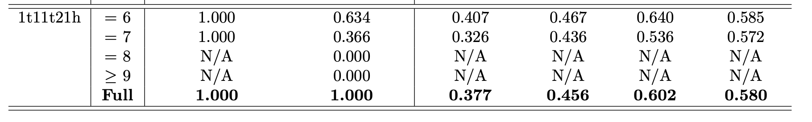

Efficiency plots v5#
This NB is incorrect because it uses the wrong version of the fully matched dataset.
In this NB I use v5 of the training (shallow, 20 epochs) to plot:
Effiency by the total number of jets in the event
Efficiencies of ttH together by njets
Efficiency by pt of the particle (normal binning only)
Efficiency by eta for the Higgs only
Efficiency by pt for b1 and b2 of the Higgs
An attempt at doing efficiency plots for the full dataset
Initialise#
Show code cell source
import h5py
import awkward as ak
import vector
import numpy as np
import matplotlib.pyplot as plt
import matplotlib as mpl
import mplhep as hep
from matplotlib.colors import LogNorm
hep.style.use(hep.style.ROOT)
mpl.rcParams['figure.dpi'] = 50
vector.register_awkward()
Show code cell source
df = h5py.File('./SPANet/0903_output_v5_matched.h5','r')
df_input = h5py.File('./SPANet/data/tth_matched_2.h5','r')
#fields = ['pt','eta','phi','btag']
#jets = ak.zip({
# f: df["INPUTS"]["Source"][f][()] for f in fields
#}, with_name="Momentum4D")
#jets["m"] = np.zeros_like(jets.pt)
#jets[0].tolist()
Show code cell source
df_jets = ak.from_parquet("/eos/user/d/dvalsecc/www/ttHbbAnalysis/training_dataset/all_jets_v6.parquet")
(jets,
partons_matched,
partons,
generator_info,
lepton_partons,
lepton_reco,
met
) = ak.unzip(df_jets)
jets = ak.with_name(jets, name="Momentum4D")
Show code cell source
# Get fully matched jets from df_jets
mask_fullymatched = ak.sum(jets.matched == True, axis=1)==7
jets = jets[jets.matched == True]
higgs = jets[jets.prov == 1]
jets = jets[ak.num(higgs) == 2]
w_or_t_jets = jets[(jets.prov == 5)|(jets.prov == 2)]
jets = jets[ak.num(w_or_t_jets) == 3]
lep_top = jets[jets.prov == 3]
jets = jets[ak.num(lep_top) == 1]
Show code cell source
def get_leptop_arrays(n, njets, mode="partial"):
# Leptonic top jets
t2_b_pred = ak.Array(df["TARGETS"]["t2"]["b"][()])
t2_b_pred = ak.unflatten(t2_b_pred, ak.ones_like(t2_b_pred))
t2_b_true = ak.Array(df_input["TARGETS"]["t2"]["b"][()])
t2_b_true = ak.unflatten(t2_b_true, ak.ones_like(t2_b_true))
leptop_index_pred = t2_b_pred
leptop_index_true = t2_b_true
if mode == "partial":
leptop_index_pred = leptop_index_pred[ak.num(jets)==n]
leptop_index_true = leptop_index_true[ak.num(jets)==n]
leptop_jet_pred = njets[leptop_index_pred]
leptop_jet_true = njets[leptop_index_true]
mask = (leptop_jet_true == leptop_jet_pred)
leptop_pred_correct = leptop_jet_pred[mask] # correctly predicted jets
leptop_pred_wrong = leptop_jet_pred[~mask] # wrongly predicted jets
leptop_pred_correct = leptop_pred_correct[ak.num(leptop_pred_correct)>0]
leptop_pred_wrong = leptop_pred_wrong[ak.num(leptop_pred_wrong)>0]
return leptop_pred_correct, leptop_pred_wrong
def get_higgs_arrays(n, njets, mode="partial"):
H_b1_true = ak.Array(df_input["TARGETS"]["h"]["b1"][()])
H_b2_true = ak.Array(df_input["TARGETS"]["h"]["b2"][()])
H_b1_true = ak.unflatten(H_b1_true, ak.ones_like(H_b1_true))
H_b2_true = ak.unflatten(H_b2_true, ak.ones_like(H_b2_true))
H_b1_pred = ak.Array(df["TARGETS"]["h"]["b1"][()])
H_b2_pred = ak.Array(df["TARGETS"]["h"]["b2"][()])
H_b1_pred = ak.unflatten(H_b1_pred, ak.ones_like(H_b1_pred))
H_b2_pred = ak.unflatten(H_b2_pred, ak.ones_like(H_b2_pred))
higgs_index_true = ak.concatenate((H_b1_true, H_b2_true), axis=1)
higgs_index_pred = ak.concatenate((H_b1_pred, H_b2_pred), axis=1)
if mode == "partial":
higgs_index_true = higgs_index_true[ak.num(jets)==n]
higgs_index_pred = higgs_index_pred[ak.num(jets)==n]
higgs_jet_true = njets[higgs_index_true]
higgs_jet_pred = njets[higgs_index_pred]
mask = (higgs_jet_true == higgs_jet_pred)
higgs_pred_correct = higgs_jet_pred[mask] # correctly predicted jets
higgs_pred_wrong = higgs_jet_pred[~mask] # wrongly predicted jets
higgs_pred_correct = higgs_pred_correct[ak.num(higgs_pred_correct)==2]
higgs_pred_wrong = higgs_pred_wrong[ak.num(higgs_pred_wrong)>0]
return higgs_pred_correct, higgs_pred_wrong
def get_hadtop_arrays(n, njets, mode="partial"):
t1_q1_true = ak.Array(df_input["TARGETS"]["t1"]["q1"][()])
t1_q2_true = ak.Array(df_input["TARGETS"]["t1"]["q2"][()])
t1_b_true = ak.Array(df_input["TARGETS"]["t1"]["b"][()])
t1_q1_true = ak.unflatten(t1_q1_true, ak.ones_like(t1_q1_true))
t1_q2_true = ak.unflatten(t1_q2_true, ak.ones_like(t1_q2_true))
t1_b_true = ak.unflatten(t1_b_true, ak.ones_like(t1_b_true))
t1_q1_pred = ak.Array(df["TARGETS"]["t1"]["q1"][()])
t1_q2_pred = ak.Array(df["TARGETS"]["t1"]["q2"][()])
t1_b_pred = ak.Array(df["TARGETS"]["t1"]["b"][()])
t1_q1_pred = ak.unflatten(t1_q1_pred, ak.ones_like(t1_q1_pred))
t1_q2_pred = ak.unflatten(t1_q2_pred, ak.ones_like(t1_q2_pred))
t1_b_pred = ak.unflatten(t1_b_pred, ak.ones_like(t1_b_pred))
hadtop_index_true = ak.concatenate((t1_q1_true, t1_q2_true, t1_b_true), axis=1)
hadtop_index_pred = ak.concatenate((t1_q1_pred, t1_q2_pred, t1_b_pred), axis=1)
if mode == "partial":
hadtop_index_true = hadtop_index_true[ak.num(jets)==n]
hadtop_index_pred = hadtop_index_pred[ak.num(jets)==n]
hadtop_jet_true = njets[hadtop_index_true]
hadtop_jet_pred = njets[hadtop_index_pred]
mask = (hadtop_jet_true == hadtop_jet_pred)
hadtop_pred_correct = hadtop_jet_pred[mask] # correctly predicted jets
hadtop_pred_wrong = hadtop_jet_pred[~mask] # wrongly predicted jets
hadtop_pred_correct = hadtop_pred_correct[ak.num(hadtop_pred_correct)==3]
hadtop_pred_wrong = hadtop_pred_wrong[ak.num(hadtop_pred_wrong)>0]
return hadtop_pred_correct, hadtop_pred_wrong
def calculate_efficiency(particle, n, njets, mode="partial"):
if particle == "h":
pred_correct, pred_wrong = get_higgs_arrays(n, njets, mode)
if particle == "t1":
pred_correct, pred_wrong = get_hadtop_arrays(n, njets, mode)
if particle == "t2":
pred_correct, pred_wrong = get_leptop_arrays(n, njets, mode)
print(f"\nNumber of correctly predicted within {n} jets is {len(pred_correct)}")
print(f"Number of wrongly predicted within {n} jets is {len(pred_wrong)}")
print(f"Total within {n} jets is {len(njets)}")
purity = len(pred_correct)/len(njets)
print(f"{n}-jet efficiency is {purity:.3f}")
return pred_correct, pred_wrong
Plot the efficiency for the different particles for different number of jets. This should be the same as the table, which is:


Leptonic top efficiency by njets#
Show code cell source
purities = []
for n in range(6,8):
pred_correct, pred_wrong = calculate_efficiency("t2", n, jets[ak.num(jets)==n])
purity = len(pred_correct)/(len(pred_correct)+len(pred_wrong))
purities.append(purity)
n = "all"
pred_correct, pred_wrong = calculate_efficiency("t2", n, jets, mode="full")
purity = len(pred_correct)/(len(pred_correct)+len(pred_wrong))
purities.append(purity)
leptop_purities = purities
Number of correctly predicted within 6 jets is 25168
Number of wrongly predicted within 6 jets is 17862
Total within 6 jets is 43030
6-jet efficiency is 0.585
Number of correctly predicted within 7 jets is 14222
Number of wrongly predicted within 7 jets is 10624
Total within 7 jets is 24846
7-jet efficiency is 0.572
Number of correctly predicted within all jets is 39390
Number of wrongly predicted within all jets is 28486
Total within all jets is 67876
all-jet efficiency is 0.580
Show code cell source
n = [6,7,"full"]
plt.plot(n, purities, marker='o')
plt.xlabel("Number of jets in the event")
plt.ylabel("Efficiency")
plt.title("Leptonic top")
plt.show()
Higgs efficiency by njets#
Show code cell source
purities = []
for n in range(6,8):
pred_correct, pred_wrong = calculate_efficiency("h", n, jets[ak.num(jets)==n])
purity = len(pred_correct)/(len(pred_correct)+len(pred_wrong))
purities.append(purity)
n = "all"
pred_correct, pred_wrong = calculate_efficiency("h", n, jets, mode="full")
purity = len(pred_correct)/(len(pred_correct)+len(pred_wrong))
purities.append(purity)
higgs_purities = purities
Number of correctly predicted within 6 jets is 20112
Number of wrongly predicted within 6 jets is 22918
Total within 6 jets is 43030
6-jet efficiency is 0.467
Number of correctly predicted within 7 jets is 10835
Number of wrongly predicted within 7 jets is 14011
Total within 7 jets is 24846
7-jet efficiency is 0.436
Number of correctly predicted within all jets is 30947
Number of wrongly predicted within all jets is 36929
Total within all jets is 67876
all-jet efficiency is 0.456
Show code cell source
n = [6,7,"full"]
plt.plot(n, purities, marker='o')
plt.xlabel("Number of jets in the event")
plt.ylabel("Efficiency")
plt.title("Higgs")
plt.show()
Hadronic top efficiency by njets#
Show code cell source
purities = []
for n in range(6,8):
pred_correct, pred_wrong = calculate_efficiency("t1", n, jets[ak.num(jets)==n])
purity = len(pred_correct)/(len(pred_correct)+len(pred_wrong))
purities.append(purity)
n = "all"
pred_correct, pred_wrong = calculate_efficiency("t1", n, jets, mode="full")
purity = len(pred_correct)/(len(pred_correct)+len(pred_wrong))
purities.append(purity)
hadtop_purities = purities
Number of correctly predicted within 6 jets is 27555
Number of wrongly predicted within 6 jets is 15475
Total within 6 jets is 43030
6-jet efficiency is 0.640
Number of correctly predicted within 7 jets is 13315
Number of wrongly predicted within 7 jets is 11531
Total within 7 jets is 24846
7-jet efficiency is 0.536
Number of correctly predicted within all jets is 40870
Number of wrongly predicted within all jets is 27006
Total within all jets is 67876
all-jet efficiency is 0.602
Show code cell source
n = [6,7,"full"]
plt.plot(n, purities, marker='o')
plt.xlabel("Number of jets in the event")
plt.ylabel("Efficiency")
plt.title("Hadronic top")
plt.show()
All efficiencies#
Show code cell source
n = [6,7,"full"]
plt.plot(n, higgs_purities, marker='o', label="H")
plt.plot(n, hadtop_purities, marker='o', label="t1")
plt.plot(n, leptop_purities, marker='o', label="t2")
plt.xlabel("Number of jets in the event")
plt.ylabel("Efficiency")
plt.legend()
plt.show()
Higgs efficiency by Higgs pt#
Show code cell source
H_b1_true = ak.Array(df_input["TARGETS"]["h"]["b1"][()])
H_b2_true = ak.Array(df_input["TARGETS"]["h"]["b2"][()])
H_b1_true = ak.unflatten(H_b1_true, ak.ones_like(H_b1_true))
H_b2_true = ak.unflatten(H_b2_true, ak.ones_like(H_b2_true))
H_b1_pred = ak.Array(df["TARGETS"]["h"]["b1"][()])
H_b2_pred = ak.Array(df["TARGETS"]["h"]["b2"][()])
H_b1_pred = ak.unflatten(H_b1_pred, ak.ones_like(H_b1_pred))
H_b2_pred = ak.unflatten(H_b2_pred, ak.ones_like(H_b2_pred))
higgs_index_true = ak.concatenate((H_b1_true, H_b2_true), axis=1)
higgs_index_pred = ak.concatenate((H_b1_pred, H_b2_pred), axis=1)
higgs_jet_true = jets[higgs_index_true]
higgs_jet_pred = jets[higgs_index_pred]
Show code cell source
higgs_jet_true
Show code cell output
<MomentumArray4D [[{pt: 126, eta: 2.37, ... prov: 1}]] type='67876 * var * Momen...'>
Show code cell source
plt.hist((higgs_jet_true[:,0] + higgs_jet_true[:,1]).pt, bins=100, range=(0,800))
plt.title("True Higgs pt distribution");
Show code cell source
higgs_true_pt = (higgs_jet_true[:,0] + higgs_jet_true[:,1]).pt
higgs_pred_pt = (higgs_jet_pred[:,0] + higgs_jet_pred[:,1]).pt
higgs_true_pt
Show code cell output
<Array [166, 161, 189, 394, ... 276, 209, 106] type='67876 * float32'>
Show code cell source
higgs_pred_pt
Show code cell output
<Array [166, 161, 108, 103, ... 276, 99.2, 106] type='67876 * float32'>
Show code cell source
def find_bin(value, bins):
""" bins is a list of tuples, like [(0,20), (20, 40), (40, 60)],
binning returns the smallest index i of bins so that
bin[i][0] <= value < bin[i][1]
"""
for i in range(0, len(bins)):
if bins[i][0] <= value < bins[i][1]:
return i
return -1
def create_bins(lower_bound, width, quantity):
""" create_bins returns an equal-width (distance) partitioning.
It returns an ascending list of tuples, representing the intervals.
A tuple bins[i], i.e. (bins[i][0], bins[i][1]) with i > 0
and i < quantity, satisfies the following conditions:
(1) bins[i][0] + width == bins[i][1]
(2) bins[i-1][0] + width == bins[i][0] and
bins[i-1][1] + width == bins[i][1]
"""
bins = []
for low in range(lower_bound, lower_bound + quantity*width + 1, width):
bins.append((low, low+width))
return bins
Show code cell source
def pt_efficiency(true_pt, pred_pt, nbins, binwidth):
# Bin the array of predicted pts
data = pd.DataFrame({"pt": pred_pt})
bins = create_bins(lower_bound=0, width=binwidth, quantity=nbins)
bin_means = []
for i in range(len(bins)):
bin_means.append((bins[i][0] + bins[i][1])/2)
bins = pd.IntervalIndex.from_tuples(bins)
data['pt_bin'] = pd.cut(data['pt'], bins=bins)
# Find all counts (correctly and wrongly predicted -- denominator of efficiency)
a = data['pt_bin'].value_counts(sort=False)
a.index = a.index.astype(str)
a = a.to_dict()
all_counts = np.array(list(a.values()))
# Construct correctly predicted and wrongly predicted jet pts
mask = (true_pt == pred_pt)
#pred_correct = pred_pt[mask] # correctly predicted jets
#pred_wrong = pred_pt[~mask] # wrongly predicted jets
# Find counts of correctly predicted events
data['correct'] = mask
data = data[data['correct']==True]
c = data['pt_bin'].value_counts(sort=False)
c.index = c.index.astype(str)
c = c.to_dict()
correct_counts = np.array(list(c.values()))
# Find the efficiency for each interval
bin_efficiency = np.zeros(len(correct_counts))
for i in range(len(all_counts)):
if all_counts[i] > 0: # disregard empty bins and assign 0 efficiency to them
bin_efficiency[i] = correct_counts[i]/all_counts[i]
else:
bin_efficiency[i] = 0
return bin_means, bin_efficiency
Show code cell source
bin_means, bin_efficiency = pt_efficiency(higgs_true_pt, higgs_pred_pt, nbins=25, binwidth=32)
plt.plot(bin_means, bin_efficiency, marker='o')
plt.axhline(0.456, label="full efficiency", color='r', linestyle="--")
plt.xlabel("pt")
plt.ylabel("Efficiency")
plt.title("Higgs")
plt.legend()
plt.show()
Normalise somehow? because very misleading – overall efficiency only 0.456
Instead of dividing by counts in that pt bin – divide by total counts
total_counts = len(higgs_pred_pt)
Show code cell source
# Bin the array of predicted pts
data = pd.DataFrame({"pt": higgs_pred_pt})
bins = create_bins(lower_bound=0, width=32, quantity=25)
bin_means = []
for i in range(len(bins)):
bin_means.append((bins[i][0] + bins[i][1])/2)
bins = pd.IntervalIndex.from_tuples(bins)
data['pt_bin'] = pd.cut(data['pt'], bins=bins)
# Construct correctly predicted and wrongly predicted jet pts
mask = (higgs_true_pt == higgs_pred_pt)
# Find counts of correctly predicted events
data['correct'] = mask
data = data[data['correct']==True]
c = data['pt_bin'].value_counts(sort=False)
c.index = c.index.astype(str)
c = c.to_dict()
correct_counts = np.array(list(c.values()))
# Find the efficiency for each interval
bin_efficiency = np.zeros(len(correct_counts))
for i in range(len(correct_counts)):
bin_efficiency[i] = correct_counts[i]/total_counts
Show code cell source
plt.plot(bin_means, bin_efficiency, marker='o')
plt.xlabel("pt")
plt.ylabel("Efficiency (denominator=total counts per bin)")
plt.title("Higgs")
plt.show()
Show code cell source
print("CORRECT COUNTS IN EACH BIN")
data['pt_bin'].value_counts(sort=False) # THE CORRECT COUNTS IN EACH BIN
CORRECT COUNTS IN EACH BIN
(0, 32] 2579
(32, 64] 4998
(64, 96] 4538
(96, 128] 3880
(128, 160] 3070
(160, 192] 2429
(192, 224] 2034
(224, 256] 1680
(256, 288] 1369
(288, 320] 1086
(320, 352] 895
(352, 384] 606
(384, 416] 469
(416, 448] 361
(448, 480] 273
(480, 512] 220
(512, 544] 146
(544, 576] 119
(576, 608] 74
(608, 640] 50
(640, 672] 25
(672, 704] 14
(704, 736] 18
(736, 768] 4
(768, 800] 3
(800, 832] 2
Name: pt_bin, dtype: int64
Show code cell source
data = pd.DataFrame({"pt": higgs_pred_pt})
bins = create_bins(lower_bound=0, width=32, quantity=25)
bin_means = []
for i in range(len(bins)):
bin_means.append((bins[i][0] + bins[i][1])/2)
bins = pd.IntervalIndex.from_tuples(bins)
data['pt_bin'] = pd.cut(data['pt'], bins=bins)
a = data['pt_bin'].value_counts(sort=False)
a.index = a.index.astype(str)
a = a.to_dict()
all_counts = np.array(list(a.values()))
print("TOTAL COUNTS IN EACH BIN")
data['pt_bin'].value_counts(sort=False) # TOTAL COUNTS IN EACH BIN
TOTAL COUNTS IN EACH BIN
(0, 32] 6609
(32, 64] 12785
(64, 96] 13368
(96, 128] 10288
(128, 160] 6903
(160, 192] 4629
(192, 224] 3354
(224, 256] 2538
(256, 288] 1955
(288, 320] 1449
(320, 352] 1133
(352, 384] 770
(384, 416] 563
(416, 448] 428
(448, 480] 318
(480, 512] 253
(512, 544] 164
(544, 576] 130
(576, 608] 87
(608, 640] 59
(640, 672] 30
(672, 704] 21
(704, 736] 21
(736, 768] 4
(768, 800] 3
(800, 832] 4
Name: pt_bin, dtype: int64
Show code cell source
plt.plot(bin_means, correct_counts, marker='o', label="correct counts")
plt.plot(bin_means, all_counts, marker='o', label="total counts")
plt.title("Higgs")
plt.legend()
plt.show()
pred_pt = higgs_pred_pt[higgs_pred_pt <= 832]
pred_pt = pred_pt[pred_pt >= 0]
(counts, bins) = np.histogram(pred_pt, bins=25)
factor = 1/np.max(counts)
plt.hist(bins[:-1], bins, weights=factor*counts, histtype="step")
bin_means, bin_efficiency = pt_efficiency(higgs_true_pt, higgs_pred_pt, nbins=25, binwidth=32)
plt.plot(bin_means, bin_efficiency, marker='o')
plt.xlabel("pt")
plt.ylabel("Efficiency")
plt.title("Higgs")
plt.xlim(0,832)
plt.axhline(0.456, label="full efficiency", color='r', linestyle="--")
plt.show()
Higgs efficiency by Higgs eta#
Show code cell source
higgs_true_eta = (higgs_jet_true[:,0] + higgs_jet_true[:,1]).eta
higgs_pred_eta = (higgs_jet_pred[:,0] + higgs_jet_pred[:,1]).eta
Show code cell source
def eta_efficiency(true_eta, pred_eta, nbins, binwidth):
# Bin the array of predicted etas
data = pd.DataFrame({"eta": pred_eta})
bins = create_bins(lower_bound=-4, width=binwidth, quantity=nbins)
bin_means = []
for i in range(len(bins)):
bin_means.append((bins[i][0] + bins[i][1])/2)
bins = pd.IntervalIndex.from_tuples(bins)
data['eta_bin'] = pd.cut(data['eta'], bins=bins)
# Find all counts (correctly and wrongly predicted -- denominator of efficiency)
a = data['eta_bin'].value_counts(sort=False)
a.index = a.index.astype(str)
a = a.to_dict()
all_counts = np.array(list(a.values()))
# Construct correctly predicted and wrongly predicted jet pts
mask = (true_eta == pred_eta)
# Find counts of correctly predicted events
data['correct'] = mask
data = data[data['correct']==True]
c = data['eta_bin'].value_counts(sort=False)
c.index = c.index.astype(str)
c = c.to_dict()
correct_counts = np.array(list(c.values()))
# Find the efficiency for each interval
bin_efficiency = np.zeros(len(correct_counts))
for i in range(len(all_counts)):
if all_counts[i] > 0: # disregard empty bins and assign 0 efficiency to them
bin_efficiency[i] = correct_counts[i]/all_counts[i]
else:
bin_efficiency[i] = 0
return bin_means, bin_efficiency
Show code cell source
bin_means, bin_efficiency = eta_efficiency(higgs_true_eta, higgs_pred_eta, nbins=7, binwidth=1)
plt.plot(bin_means, bin_efficiency, marker='o')
plt.xlabel("eta")
plt.ylabel("Efficiency")
plt.title("Higgs")
plt.show()
Higgs quark efficiency by quark pt#
Show code cell source
H_b1_true = ak.Array(df_input["TARGETS"]["h"]["b1"][()])
H_b1_true = ak.unflatten(H_b1_true, ak.ones_like(H_b1_true))
H_b1_pred = ak.Array(df["TARGETS"]["h"]["b1"][()])
H_b1_pred = ak.unflatten(H_b1_pred, ak.ones_like(H_b1_pred))
H_b1_jet_true = jets[H_b1_true]
H_b1_jet_pred = jets[H_b1_pred]
b1_true_pt = H_b1_jet_true.pt
b1_pred_pt = H_b1_jet_pred.pt
b1_true_pt = ak.flatten(b1_true_pt)
b1_pred_pt = ak.flatten(b1_pred_pt)
Show code cell source
bin_means, bin_efficiency = pt_efficiency(b1_true_pt, b1_pred_pt, nbins=25, binwidth=32)
plt.plot(bin_means, bin_efficiency, marker='o')
plt.xlabel("pt")
plt.ylabel("Efficiency")
plt.title("b1")
plt.show()
Show code cell source
H_b2_true = ak.Array(df_input["TARGETS"]["h"]["b2"][()])
H_b2_true = ak.unflatten(H_b2_true, ak.ones_like(H_b2_true))
H_b2_pred = ak.Array(df["TARGETS"]["h"]["b2"][()])
H_b2_pred = ak.unflatten(H_b2_pred, ak.ones_like(H_b2_pred))
H_b2_jet_true = jets[H_b2_true]
H_b2_jet_pred = jets[H_b2_pred]
b2_true_pt = H_b2_jet_true.pt
b2_pred_pt = H_b2_jet_pred.pt
b2_true_pt = ak.flatten(b2_true_pt)
b2_pred_pt = ak.flatten(b2_pred_pt)
Show code cell source
bin_means, bin_efficiency = pt_efficiency(b2_true_pt, b2_pred_pt, nbins=25, binwidth=14)
plt.plot(bin_means, bin_efficiency, marker='o', label="binwidth=14")
bin_means, bin_efficiency = pt_efficiency(b2_true_pt, b2_pred_pt, nbins=25, binwidth=32)
plt.plot(bin_means, bin_efficiency, marker='o', label="binwidth=32")
plt.xlabel("pt")
plt.ylabel("Efficiency")
plt.title("b2")
plt.legend()
plt.show()
Show code cell source
bin_means, bin_efficiency = pt_efficiency(b1_true_pt, b1_pred_pt, nbins=25, binwidth=32)
plt.plot(bin_means, bin_efficiency, marker='o', label="b1")
bin_means, bin_efficiency = pt_efficiency(b2_true_pt, b2_pred_pt, nbins=25, binwidth=32)
plt.plot(bin_means, bin_efficiency, marker='o', label="b2")
plt.xlabel("pt")
plt.ylabel("Efficiency")
plt.legend()
plt.show()
Make sure correctly assigned are the case when b1 and b2 both assigned correctly
higgs_index_true = ak.concatenate((H_b1_true, H_b2_true), axis=1)
higgs_index_pred = ak.concatenate((H_b1_pred, H_b2_pred), axis=1)
higgs_jet_true = jets[higgs_index_true]
higgs_jet_pred = jets[higgs_index_pred]
higgs_pred_pt = (higgs_jet_pred[:,0] + higgs_jet_pred[:,1]).pt
higgs_true_pt = (higgs_jet_true[:,0] + higgs_jet_true[:,1]).pt
mask = (higgs_jet_true == higgs_jet_pred)
higgs_pred_correct = higgs_jet_pred[mask] # correctly predicted jets
higgs_pred_wrong = higgs_jet_pred[~mask] # wrongly predicted jets
higgs_pred_correct = higgs_pred_correct[ak.num(higgs_pred_correct)==2]
higgs_pred_wrong = higgs_pred_wrong[ak.num(higgs_pred_wrong)>0]
higgs_pred_correct_pt = (higgs_pred_correct[:,0] + higgs_pred_correct[:,1]).pt
higgs_true_correct_pt = (higgs_pred_correct[:,0] + higgs_pred_correct[:,1]).pt
mask2 = []
for i in range(len(mask)):
mask2.append((mask[i,0] and mask[i,1]) == True)
Show code cell source
binwidth = 32
nbins = 25
pred_pt = higgs_pred_pt
true_pt = higgs_true_pt
correct_pt = higgs_pred_correct_pt
# Bin the array of predicted pts
data = pd.DataFrame({"pt": pred_pt})
bins = create_bins(lower_bound=0, width=binwidth, quantity=nbins)
bin_means = []
for i in range(len(bins)):
bin_means.append((bins[i][0] + bins[i][1])/2)
bins = pd.IntervalIndex.from_tuples(bins)
data['pt_bin'] = pd.cut(data['pt'], bins=bins)
# Find all counts (correctly and wrongly predicted -- denominator of efficiency)
a = data['pt_bin'].value_counts(sort=False)
a.index = a.index.astype(str)
a = a.to_dict()
all_counts = np.array(list(a.values()))
# Find counts of correctly predicted events
data['correct'] = mask2
data = data[data['correct']==True]
c = data['pt_bin'].value_counts(sort=False)
c.index = c.index.astype(str)
c = c.to_dict()
correct_counts = np.array(list(c.values()))
# Find the efficiency for each interval
bin_efficiency = np.zeros(len(correct_counts))
for i in range(len(all_counts)):
if all_counts[i] > 0: # disregard empty bins and assign 0 efficiency to them
bin_efficiency[i] = correct_counts[i]/all_counts[i]
else:
bin_efficiency[i] = 0
Show code cell source
plt.plot(bin_means, bin_efficiency, marker='o')
plt.xlabel("pt")
plt.ylabel("Efficiency")
plt.title("Higgs")
plt.show()
plt.plot(bin_means, bin_efficiency, marker='o')
bin_means, bin_efficiency = pt_efficiency(higgs_true_pt, higgs_pred_pt, nbins=25, binwidth=32)
plt.plot(bin_means, bin_efficiency, marker='o')
plt.xlabel("pt")
plt.ylabel("Efficiency")
plt.show()
Leptonic top efficiency by pt#
Show code cell source
t2_b_pred = ak.Array(df["TARGETS"]["t2"]["b"][()])
t2_b_pred = ak.unflatten(t2_b_pred, ak.ones_like(t2_b_pred))
t2_b_true = ak.Array(df_input["TARGETS"]["t2"]["b"][()])
t2_b_true = ak.unflatten(t2_b_true, ak.ones_like(t2_b_true))
leptop_index_pred = t2_b_pred
leptop_index_true = t2_b_true
leptop_jet_pred = jets[leptop_index_pred]
leptop_jet_true = jets[leptop_index_true]
leptop_pred_pt = leptop_jet_pred.pt
leptop_true_pt = leptop_jet_true.pt
leptop_pred_pt = ak.flatten(leptop_pred_pt)
leptop_true_pt = ak.flatten(leptop_true_pt)
Show code cell source
bin_means, bin_efficiency = pt_efficiency(leptop_true_pt, leptop_pred_pt, nbins=25, binwidth=20)
plt.plot(bin_means, bin_efficiency, marker='o')
plt.axhline(0.580, label="full efficiency", color='r', linestyle="--")
plt.xlabel("pt")
plt.ylabel("Efficiency")
plt.title("Leptonic top")
plt.legend()
plt.show()
Show code cell source
pred_pt = leptop_pred_pt[leptop_pred_pt <= 520]
pred_pt = pred_pt[pred_pt >= 0]
(counts, bins) = np.histogram(pred_pt, bins=25)
factor = 1/np.max(counts)
plt.hist(bins[:-1], bins, weights=factor*counts, histtype="step")
bin_means, bin_efficiency = pt_efficiency(leptop_true_pt, leptop_pred_pt, nbins=25, binwidth=20)
plt.plot(bin_means, bin_efficiency, marker='o')
plt.axhline(0.580, label="full efficiency", color='r', linestyle="--")
plt.xlabel("pt")
plt.ylabel("Efficiency")
plt.title("Leptonic top")
plt.legend()
plt.show()
Hadronic top efficiency by pt#
Show code cell source
t1_q1_true = ak.Array(df_input["TARGETS"]["t1"]["q1"][()])
t1_q2_true = ak.Array(df_input["TARGETS"]["t1"]["q2"][()])
t1_b_true = ak.Array(df_input["TARGETS"]["t1"]["b"][()])
t1_q1_true = ak.unflatten(t1_q1_true, ak.ones_like(t1_q1_true))
t1_q2_true = ak.unflatten(t1_q2_true, ak.ones_like(t1_q2_true))
t1_b_true = ak.unflatten(t1_b_true, ak.ones_like(t1_b_true))
t1_q1_pred = ak.Array(df["TARGETS"]["t1"]["q1"][()])
t1_q2_pred = ak.Array(df["TARGETS"]["t1"]["q2"][()])
t1_b_pred = ak.Array(df["TARGETS"]["t1"]["b"][()])
t1_q1_pred = ak.unflatten(t1_q1_pred, ak.ones_like(t1_q1_pred))
t1_q2_pred = ak.unflatten(t1_q2_pred, ak.ones_like(t1_q2_pred))
t1_b_pred = ak.unflatten(t1_b_pred, ak.ones_like(t1_b_pred))
hadtop_index_true = ak.concatenate((t1_q1_true, t1_q2_true, t1_b_true), axis=1)
hadtop_index_pred = ak.concatenate((t1_q1_pred, t1_q2_pred, t1_b_pred), axis=1)
hadtop_jet_true = jets[hadtop_index_true]
hadtop_jet_pred = jets[hadtop_index_pred]
hadtop_pred_pt = (hadtop_jet_pred[:,0] + hadtop_jet_pred[:,1] + hadtop_jet_pred[:,2]).pt
hadtop_true_pt = (hadtop_jet_true[:,0] + hadtop_jet_true[:,1] + hadtop_jet_true[:,2]).pt
Show code cell source
bin_means, bin_efficiency = pt_efficiency(hadtop_true_pt, hadtop_pred_pt, nbins=25, binwidth=32)
plt.plot(bin_means, bin_efficiency, marker='o')
plt.axhline(0.602, label="full efficiency", color='r', linestyle="--")
plt.xlabel("pt")
plt.ylabel("Efficiency")
plt.title("Hadronic top")
plt.legend()
plt.show()
Show code cell source
pred_pt = hadtop_pred_pt[hadtop_pred_pt <= 832]
pred_pt = pred_pt[pred_pt >= 0]
(counts, bins) = np.histogram(pred_pt, bins=25)
factor = 1/np.max(counts)
plt.hist(bins[:-1], bins, weights=factor*counts, histtype="step")
bin_means, bin_efficiency = pt_efficiency(hadtop_true_pt, hadtop_pred_pt, nbins=25, binwidth=32)
plt.plot(bin_means, bin_efficiency, marker='o')
plt.xlabel("pt")
plt.ylabel("Efficiency")
plt.title("Hadronic top")
plt.axhline(0.602, label="full efficiency", color='r', linestyle="--")
plt.show()
Full dataset efficiency plots#
Initialise#
Show code cell source
df = h5py.File('./SPANet/1003_output_v5_full.h5','r')
df_input = h5py.File('./SPANet/data/tth.h5','r')
jets_input = ak.from_parquet("/eos/user/d/dvalsecc/www/ttHbbAnalysis/training_dataset/all_jets_v6.parquet")
(jets,
partons_matched,
partons,
generator_info,
lepton_partons,
lepton_reco,
met
) = ak.unzip(jets_input)
jets = ak.with_name(jets, name="Momentum4D")
Show code cell source
jets[0].tolist()
Show code cell output
[{'pt': 68.3125,
'eta': 0.8526611328125,
'phi': 2.255859375,
'btag': 0.9951171875,
'm': 0.0,
'matched': True,
'prov': 2.0},
{'pt': 58.03125,
'eta': 1.462158203125,
'phi': -0.42449951171875,
'btag': 0.732421875,
'm': 0.0,
'matched': True,
'prov': 3.0},
{'pt': 40.4375,
'eta': 1.4453125,
'phi': -1.45703125,
'btag': 0.0792236328125,
'm': 0.0,
'matched': False,
'prov': -1.0},
{'pt': 30.71875,
'eta': 0.04489898681640625,
'phi': 0.5386962890625,
'btag': 0.49560546875,
'm': 0.0,
'matched': True,
'prov': 4.0},
{'pt': 30.421875,
'eta': 2.32421875,
'phi': 0.33026123046875,
'btag': 0.04327392578125,
'm': 0.0,
'matched': True,
'prov': 5.0}]
Show code cell source
fields = ['pt','eta','phi','btag']
jets = ak.zip({
f: df["INPUTS"]["Source"][f][()] for f in fields
}, with_name="Momentum4D")
jets["m"] = np.zeros_like(jets.pt)
jets[0].tolist()
Show code cell output
[{'pt': 68.3125,
'eta': 0.8526611328125,
'phi': 2.255859375,
'btag': 0.9951171875,
'm': 0.0},
{'pt': 58.03125,
'eta': 1.462158203125,
'phi': -0.42449951171875,
'btag': 0.732421875,
'm': 0.0},
{'pt': 40.4375,
'eta': 1.4453125,
'phi': -1.45703125,
'btag': 0.0792236328125,
'm': 0.0},
{'pt': 30.71875,
'eta': 0.04489898681640625,
'phi': 0.5386962890625,
'btag': 0.49560546875,
'm': 0.0},
{'pt': 30.421875,
'eta': 2.32421875,
'phi': 0.33026123046875,
'btag': 0.04327392578125,
'm': 0.0},
{'pt': 0.0, 'eta': 0.0, 'phi': 0.0, 'btag': 0.0, 'm': 0.0},
{'pt': 0.0, 'eta': 0.0, 'phi': 0.0, 'btag': 0.0, 'm': 0.0},
{'pt': 0.0, 'eta': 0.0, 'phi': 0.0, 'btag': 0.0, 'm': 0.0},
{'pt': 0.0, 'eta': 0.0, 'phi': 0.0, 'btag': 0.0, 'm': 0.0},
{'pt': 0.0, 'eta': 0.0, 'phi': 0.0, 'btag': 0.0, 'm': 0.0},
{'pt': 0.0, 'eta': 0.0, 'phi': 0.0, 'btag': 0.0, 'm': 0.0},
{'pt': 0.0, 'eta': 0.0, 'phi': 0.0, 'btag': 0.0, 'm': 0.0},
{'pt': 0.0, 'eta': 0.0, 'phi': 0.0, 'btag': 0.0, 'm': 0.0},
{'pt': 0.0, 'eta': 0.0, 'phi': 0.0, 'btag': 0.0, 'm': 0.0},
{'pt': 0.0, 'eta': 0.0, 'phi': 0.0, 'btag': 0.0, 'm': 0.0}]
fields = ['pt','eta','phi','btag']
jets = ak.zip({
f: df["INPUTS"]["Source"][f][()] for f in fields
}, with_name="Momentum4D")
jets["m"] = np.zeros_like(jets.pt)
jets[0].tolist()
leptop_full_pred_correct, leptop_full_pred_wrong = get_leptop_arrays(15, jets) # full jets
jets_input = ak.from_parquet("/eos/user/d/dvalsecc/www/ttHbbAnalysis/training_dataset/all_jets_v6.parquet")
(jets,
partons_matched,
partons,
generator_info,
lepton_partons,
lepton_reco,
met
) = ak.unzip(jets_input)
jets = ak.with_name(jets, name="Momentum4D")
leptop_6_pred_correct, leptop_6_pred_wrong = get_leptop_arrays(6, jets[ak.num(jets)==6]) # 6-jet events
leptop_7_pred_correct, leptop_7_pred_wrong = get_leptop_arrays(7, jets[ak.num(jets)==7]) # 6-jet events
Show code cell source
plt.hist(ak.num(jets))
plt.xlabel("Number of jets");
Leptonic top#
def get_leptop_arrays(n, njets, mode="partial"):
# Leptonic top jets
t2_b_pred = ak.Array(df["TARGETS"]["t2"]["b"][()])
t2_b_pred = ak.unflatten(t2_b_pred, ak.ones_like(t2_b_pred))
t2_b_true = ak.Array(df_input["TARGETS"]["t2"]["b"][()])
t2_b_true = ak.unflatten(t2_b_true, ak.ones_like(t2_b_true))
leptop_index_pred = t2_b_pred
leptop_index_true = t2_b_true
print(leptop_index_true)
print(leptop_index_pred)
print(len(leptop_index_true))
print(len(leptop_index_pred))
mask = (leptop_index_true != -1)
leptop_index_true = leptop_index_true[mask]
leptop_index_pred = leptop_index_pred[mask]
print(leptop_index_true)
print(leptop_index_pred)
print(len(leptop_index_true))
print(len(leptop_index_pred))
if mode == "partial":
leptop_index_pred = leptop_index_pred[ak.num(jets)==n]
leptop_index_true = leptop_index_true[ak.num(jets)==n]
#leptop_index_pred = ak.leptop_index_pred
#leptop_jet_pred = njets[leptop_index_pred] #causes an error
#leptop_jet_true = njets[leptop_index_true]
#mask = (leptop_jet_true == leptop_jet_pred)
#leptop_pred_correct = leptop_jet_pred[mask] # correctly predicted jets
#leptop_pred_wrong = leptop_jet_pred[~mask] # wrongly predicted jets
#leptop_pred_correct = leptop_pred_correct[ak.num(leptop_pred_correct)>0]
#leptop_pred_wrong = leptop_pred_wrong[ak.num(leptop_pred_wrong)>0]
return leptop_index_true, leptop_index_pred
#return leptop_pred_correct, leptop_pred_wrong
n = "all"
in_true, in_pred = calculate_efficiency("t2", n, jets, mode="full")
[[1], [3], [2], [4], [0], [0], [1], [1], ... -1], [-1], [4], [0], [2], [1], [1], [2]]
[[3], [3], [2], [1], [3], [0], [1], [1], ... [0], [1], [1], [0], [0], [1], [0], [2]]
584143
584143
[[1], [3], [2], [4], [0], [0], [1], [1], ... [], [], [4], [0], [2], [1], [1], [2]]
[[3], [3], [2], [1], [3], [0], [1], [1], ... [], [], [1], [0], [0], [1], [0], [2]]
584143
584143
Number of correctly predicted within all jets is 584143
Number of wrongly predicted within all jets is 584143
Total within all jets is 584143
all-jet efficiency is 1.000
n = 6
in_true, in_pred = calculate_efficiency("t2", n, jets[ak.num(jets)==6])
[[1], [3], [2], [4], [0], [0], [1], [1], ... -1], [-1], [4], [0], [2], [1], [1], [2]]
[[3], [3], [2], [1], [3], [0], [1], [1], ... [0], [1], [1], [0], [0], [1], [0], [2]]
584143
584143
[[1], [3], [2], [4], [0], [0], [1], [1], ... [], [], [4], [0], [2], [1], [1], [2]]
[[3], [3], [2], [1], [3], [0], [1], [1], ... [], [], [1], [0], [0], [1], [0], [2]]
584143
584143
Number of correctly predicted within 6 jets is 162798
Number of wrongly predicted within 6 jets is 162798
Total within 6 jets is 162798
6-jet efficiency is 1.000
jets_6 = jets[ak.num(jets)==6]
jets_6
<MomentumArray4D [[{pt: 142, eta: 1.5, ... prov: -1}]] type='162798 * var * Mome...'>
in_true
<Array [[3], [1], [2], ... [], [], [], [1]] type='162798 * var * int64'>
in_pred
<Array [[3], [1], [1], ... [], [], [], [0]] type='162798 * var * int64'>
a = jets_6[0:3]
#pred_correct = np.array([])
pred_correct = ak.Array([])
for i in range(len(a)):
#print(a[i][in_true[i]])
#print(ak.Array(a[i][in_true[i]]))
pred_correct = ak.Array(a[i][in_true[i]])
print(pred_correct)
#pred_correct = np.append(pred_correct, ak.to_numpy(a[i][in_true[i]]))
[{pt: 102, eta: 1.12, phi: -0.816, btag: 1, m: 0, matched: True, prov: 3}]
---------------------------------------------------------------------------
TypeError Traceback (most recent call last)
/tmp/ipykernel_538/2164280035.py in <module>
7 pred_correct = ak.Array(a[i][in_true[i]])
8 print(pred_correct)
----> 9 pred_correct_np = np.append(pred_correct_np, pred_correct)
10 #pred_correct = np.append(pred_correct, ak.to_numpy(a[i][in_true[i]]))
/cvmfs/sft.cern.ch/lcg/views/LCG_102b_swan/x86_64-centos7-gcc11-opt/lib/python3.9/site-packages/numpy/core/overrides.py in append(*args, **kwargs)
/cvmfs/sft.cern.ch/lcg/views/LCG_102b_swan/x86_64-centos7-gcc11-opt/lib/python3.9/site-packages/awkward/highlevel.py in __array_function__(self, func, types, args, kwargs)
1439 See also #__array_ufunc__.
1440 """
-> 1441 return ak._connect._numpy.array_function(func, types, args, kwargs)
1442
1443 @property
/cvmfs/sft.cern.ch/lcg/views/LCG_102b_swan/x86_64-centos7-gcc11-opt/lib/python3.9/site-packages/awkward/_connect/_numpy.py in array_function(func, types, args, kwargs)
48 args = tuple(_to_rectilinear(x) for x in args)
49 kwargs = dict((k, _to_rectilinear(v)) for k, v in kwargs.items())
---> 50 out = func(*args, **kwargs)
51 nplike = ak.nplike.of(out)
52 if isinstance(out, nplike.ndarray) and len(out.shape) != 0:
/cvmfs/sft.cern.ch/lcg/views/LCG_102b_swan/x86_64-centos7-gcc11-opt/lib/python3.9/site-packages/numpy/core/overrides.py in append(*args, **kwargs)
/cvmfs/sft.cern.ch/lcg/views/LCG_102b_swan/x86_64-centos7-gcc11-opt/lib/python3.9/site-packages/numpy/lib/function_base.py in append(arr, values, axis)
5390 values = ravel(values)
5391 axis = arr.ndim-1
-> 5392 return concatenate((arr, values), axis=axis)
5393
5394
/cvmfs/sft.cern.ch/lcg/views/LCG_102b_swan/x86_64-centos7-gcc11-opt/lib/python3.9/site-packages/numpy/core/overrides.py in concatenate(*args, **kwargs)
TypeError: The DTypes <class 'numpy.dtype[void]'> and <class 'numpy.dtype[float64]'> do not have a common DType. For example they cannot be stored in a single array unless the dtype is `object`.
mask = (in_true == in_pred)
mask = (in_true == in_pred)
mask
<Array [[False], [True], ... [False], [True]] type='584143 * var * bool'>
print(mask[0:10])
[[False], [True], [True], [False], [False, ... [True], [True], [False], [True]]
pred_correct = jets[mask]
pred_correct = jets[in_true]
pred_wrong = jets[in_pred]
pred_wrong = pred_wrong[~mask]
#pred_wrong = pred_wrong[in_pred]
---------------------------------------------------------------------------
ValueError Traceback (most recent call last)
/tmp/ipykernel_538/3408213243.py in <module>
1 pred_correct = jets[mask]
2 pred_correct = jets[in_true]
----> 3 pred_wrong = jets[in_pred]
4 pred_wrong = pred_wrong[~mask]
5 #pred_wrong = pred_wrong[in_pred]
/cvmfs/sft.cern.ch/lcg/views/LCG_102b_swan/x86_64-centos7-gcc11-opt/lib/python3.9/site-packages/vector/_backends/awkward_.py in __getitem__(self, where)
348 ) -> typing.Optional[typing.Union[float, ak.Array, ak.Record]]:
349 # "__getitem__" undefined in superclass
--> 350 return super().__getitem__(where) # type: ignore[misc]
351
352 def _wrap_result(
/cvmfs/sft.cern.ch/lcg/views/LCG_102b_swan/x86_64-centos7-gcc11-opt/lib/python3.9/site-packages/awkward/highlevel.py in __getitem__(self, where)
995 """
996 if not hasattr(self, "_tracers"):
--> 997 tmp = ak._util.wrap(self.layout[where], self._behavior)
998 else:
999 tmp = ak._connect._jax.jax_utils._jaxtracers_getitem(self, where)
ValueError: in ListArray64 attempting to get 5, index out of range
(https://github.com/scikit-hep/awkward-1.0/blob/1.7.0/src/cpu-kernels/awkward_ListArray_getitem_jagged_apply.cpp#L43)
pred_wrong[2].tolist()
[]
len(jets[0])
5
for i in range(len(jets)):
#print(in_pred[i])
if len(in_pred[i]) > 0: # not empty array
if in_pred[i][0] > len(jets[i]):
print(i)
leptop_pred_correct = jets[mask]
Show code cell source
purities = []
for n in range(4,16):
pred_correct, pred_wrong = calculate_efficiency("t2", n, jets[ak.num(jets)==n])
purity = len(pred_correct)/(len(pred_correct)+len(pred_wrong))
purities.append(purity)
Number of correctly predicted within 4 jets is 51476
Number of wrongly predicted within 4 jets is 47332
Total within 4 jets is 98808
4-jet efficiency is 0.521
---------------------------------------------------------------------------
ValueError Traceback (most recent call last)
/tmp/ipykernel_538/4252241416.py in <module>
1 purities = []
2 for n in range(4,16):
----> 3 pred_correct, pred_wrong = calculate_efficiency("t2", n, jets[ak.num(jets)==n])
4 purity = len(pred_correct)/(len(pred_correct)+len(pred_wrong))
5 purities.append(purity)
/tmp/ipykernel_538/1940242657.py in calculate_efficiency(particle, n, njets, mode)
103 pred_correct, pred_wrong = get_hadtop_arrays(n, njets, mode)
104 if particle == "t2":
--> 105 pred_correct, pred_wrong = get_leptop_arrays(n, njets, mode)
106 print(f"\nNumber of correctly predicted within {n} jets is {len(pred_correct)}")
107 print(f"Number of wrongly predicted within {n} jets is {len(pred_wrong)}")
/tmp/ipykernel_538/1940242657.py in get_leptop_arrays(n, njets, mode)
15 leptop_index_true = leptop_index_true[ak.num(jets)==n]
16
---> 17 leptop_jet_pred = njets[leptop_index_pred]
18 leptop_jet_true = njets[leptop_index_true]
19
/cvmfs/sft.cern.ch/lcg/views/LCG_102b_swan/x86_64-centos7-gcc11-opt/lib/python3.9/site-packages/vector/_backends/awkward_.py in __getitem__(self, where)
348 ) -> typing.Optional[typing.Union[float, ak.Array, ak.Record]]:
349 # "__getitem__" undefined in superclass
--> 350 return super().__getitem__(where) # type: ignore[misc]
351
352 def _wrap_result(
/cvmfs/sft.cern.ch/lcg/views/LCG_102b_swan/x86_64-centos7-gcc11-opt/lib/python3.9/site-packages/awkward/highlevel.py in __getitem__(self, where)
995 """
996 if not hasattr(self, "_tracers"):
--> 997 tmp = ak._util.wrap(self.layout[where], self._behavior)
998 else:
999 tmp = ak._connect._jax.jax_utils._jaxtracers_getitem(self, where)
ValueError: in ListArray64 attempting to get 5, index out of range
(https://github.com/scikit-hep/awkward-1.0/blob/1.7.0/src/cpu-kernels/awkward_ListArray_getitem_jagged_apply.cpp#L43)
n = [4,6,7,8,9,10,11,12,13,14,15]
plt.plot(n, purities, marker='o')
plt.xlabel("Number of jets in the event")
plt.ylabel("Efficiency")
plt.title("Leptonic top")
plt.show()
Higgs#
purities = []
for n in range(4,16):
if n == 5:
continue
pred_correct, pred_wrong = calculate_efficiency("h", n, jets[ak.num(jets)==n])
purity = len(pred_correct)/(len(pred_correct)+len(pred_wrong))
purities.append(purity)
---------------------------------------------------------------------------
ValueError Traceback (most recent call last)
/tmp/ipykernel_538/1514885801.py in <module>
3 if n == 5:
4 continue
----> 5 pred_correct, pred_wrong = calculate_efficiency("h", n, jets[ak.num(jets)==n])
6 purity = len(pred_correct)/(len(pred_correct)+len(pred_wrong))
7 purities.append(purity)
/tmp/ipykernel_538/1940242657.py in calculate_efficiency(particle, n, njets, mode)
99 def calculate_efficiency(particle, n, njets, mode="partial"):
100 if particle == "h":
--> 101 pred_correct, pred_wrong = get_higgs_arrays(n, njets, mode)
102 if particle == "t1":
103 pred_correct, pred_wrong = get_hadtop_arrays(n, njets, mode)
/tmp/ipykernel_538/1940242657.py in get_higgs_arrays(n, njets, mode)
49
50 higgs_jet_true = njets[higgs_index_true]
---> 51 higgs_jet_pred = njets[higgs_index_pred]
52
53 mask = (higgs_jet_true == higgs_jet_pred)
/cvmfs/sft.cern.ch/lcg/views/LCG_102b_swan/x86_64-centos7-gcc11-opt/lib/python3.9/site-packages/vector/_backends/awkward_.py in __getitem__(self, where)
348 ) -> typing.Optional[typing.Union[float, ak.Array, ak.Record]]:
349 # "__getitem__" undefined in superclass
--> 350 return super().__getitem__(where) # type: ignore[misc]
351
352 def _wrap_result(
/cvmfs/sft.cern.ch/lcg/views/LCG_102b_swan/x86_64-centos7-gcc11-opt/lib/python3.9/site-packages/awkward/highlevel.py in __getitem__(self, where)
995 """
996 if not hasattr(self, "_tracers"):
--> 997 tmp = ak._util.wrap(self.layout[where], self._behavior)
998 else:
999 tmp = ak._connect._jax.jax_utils._jaxtracers_getitem(self, where)
ValueError: in ListArray64 attempting to get 4, index out of range
(https://github.com/scikit-hep/awkward-1.0/blob/1.7.0/src/cpu-kernels/awkward_ListArray_getitem_jagged_apply.cpp#L43)
len(jets[ak.num(jets)==6])
162798
jets_6 = jets[ak.num(jets)==6]
get_higgs_arrays(6, jets_6)
[[1, 5], [2, 5], [0, 4], [1, 3], [2, 4], ... [0, 1], [2, 3], [0, 4], [1, 5], [0, 4]]
[[1, 5], [2, 4], [0, 4], [2, 3], [2, 2], ... [0, 1], [2, 3], [0, 4], [3, 5], [4, 4]]
162798
162798
---------------------------------------------------------------------------
ValueError Traceback (most recent call last)
/tmp/ipykernel_540/2680829509.py in <module>
1 jets_6 = jets[ak.num(jets)==6]
----> 2 get_higgs_arrays(6, jets_6)
/tmp/ipykernel_540/1812671774.py in get_higgs_arrays(n, njets)
33 print(len(higgs_index_pred))
34
---> 35 higgs_jet_true = njets[higgs_index_true]
36 higgs_jet_pred = njets[higgs_index_pred]
37
/cvmfs/sft.cern.ch/lcg/views/LCG_102b_swan/x86_64-centos7-gcc11-opt/lib/python3.9/site-packages/vector/_backends/awkward_.py in __getitem__(self, where)
348 ) -> typing.Optional[typing.Union[float, ak.Array, ak.Record]]:
349 # "__getitem__" undefined in superclass
--> 350 return super().__getitem__(where) # type: ignore[misc]
351
352 def _wrap_result(
/cvmfs/sft.cern.ch/lcg/views/LCG_102b_swan/x86_64-centos7-gcc11-opt/lib/python3.9/site-packages/awkward/highlevel.py in __getitem__(self, where)
995 """
996 if not hasattr(self, "_tracers"):
--> 997 tmp = ak._util.wrap(self.layout[where], self._behavior)
998 else:
999 tmp = ak._connect._jax.jax_utils._jaxtracers_getitem(self, where)
ValueError: in ListArray64 attempting to get 7, index out of range
(https://github.com/scikit-hep/awkward-1.0/blob/1.7.0/src/cpu-kernels/awkward_ListArray_getitem_jagged_apply.cpp#L43)
purities = []
for n in range(4,16):
try:
pred_correct, pred_wrong = calculate_efficiency("h", n, jets[ak.num(jets)==n])
purity = len(pred_correct)/(len(pred_correct)+len(pred_wrong))
purities.append(purity)
except ValueError:
print(f"For {n} jets, Higgs doesn't exist")
For 4 jets, Higgs doesn't exist
For 5 jets, Higgs doesn't exist
For 6 jets, Higgs doesn't exist
For 7 jets, Higgs doesn't exist
For 8 jets, Higgs doesn't exist
For 9 jets, Higgs doesn't exist
For 10 jets, Higgs doesn't exist
Number of correctly predicted within 11 jets is 163
Number of wrongly predicted within 11 jets is 680
Total within 11 jets is 843
11-jet efficiency is 0.193
Number of correctly predicted within 12 jets is 35
Number of wrongly predicted within 12 jets is 174
Total within 12 jets is 209
12-jet efficiency is 0.167
Number of correctly predicted within 13 jets is 4
Number of wrongly predicted within 13 jets is 41
Total within 13 jets is 45
13-jet efficiency is 0.089
Number of correctly predicted within 14 jets is 2
Number of wrongly predicted within 14 jets is 7
Total within 14 jets is 9
14-jet efficiency is 0.222
Number of correctly predicted within 15 jets is 1
Number of wrongly predicted within 15 jets is 1
Total within 15 jets is 2
15-jet efficiency is 0.500
df = h5py.File('./SPANet/1003_output_v5_full.h5','r')
df_input = h5py.File('./SPANet/data/tth.h5','r')
H_b1_true = ak.Array(df_input["TARGETS"]["h"]["b1"][()])
H_b2_true = ak.Array(df_input["TARGETS"]["h"]["b2"][()])
H_b1_true = ak.unflatten(H_b1_true, ak.ones_like(H_b1_true))
H_b2_true = ak.unflatten(H_b2_true, ak.ones_like(H_b2_true))
H_b1_pred = ak.Array(df["TARGETS"]["h"]["b1"][()])
H_b2_pred = ak.Array(df["TARGETS"]["h"]["b2"][()])
H_b1_pred = ak.unflatten(H_b1_pred, ak.ones_like(H_b1_pred))
H_b2_pred = ak.unflatten(H_b2_pred, ak.ones_like(H_b2_pred))
fields = ['pt','eta','phi','btag']
jets = ak.zip({
f: df["INPUTS"]["Source"][f][()] for f in fields
}, with_name="Momentum4D")
jets["m"] = np.zeros_like(jets.pt)
jets_input = ak.from_parquet("/eos/user/d/dvalsecc/www/ttHbbAnalysis/training_dataset/all_jets_v6.parquet")
(jets,
partons_matched,
partons,
generator_info,
lepton_partons,
lepton_reco,
met
) = ak.unzip(jets_input)
jets = ak.with_name(jets, name="Momentum4D")
# Higgs jets full
temp_true_1 = ak.concatenate((H_b1_true, H_b2_true), axis=1)
higgs_index_pred = ak.concatenate((H_b1_pred, H_b2_pred), axis=1)
print(temp_true_1)
print(higgs_index_pred)
print(len(temp_true_1))
print(len(higgs_index_pred))
temp_true_2 = temp_true_1[temp_true_1[:,0] != -1]
higgs_index_true = temp_true_2[temp_true_2[:,1] != -1]
higgs_index_pred = higgs_index_pred[temp_true_1[:,0] != -1]
higgs_index_pred = higgs_index_pred[temp_true_2[:,1] != -1]
print(higgs_index_true)
print(higgs_index_pred)
print(len(higgs_index_true))
print(len(higgs_index_pred))
temp_jets = jets[temp_true_1[:,0] != -1]
temp_jets = temp_jets[temp_true_2[:,1] != -1]
print(len(temp_jets))
#higgs_full_jet_true = temp_jets[higgs_index_true]
#higgs_full_jet_pred = temp_jets[higgs_index_pred]
# Masking to get correct and wrong predictions
#mask = (higgs_full_jet_true == higgs_full_jet_pred)
#higgs_full_pred_correct = higgs_full_jet_pred[mask] # correctly predicted jets
#higgs_full_pred_wrong = higgs_full_jet_pred[~mask] # wrongly predicted jets
# Drop empty arrays
#higgs_full_pred_correct = higgs_full_pred_correct[ak.num(higgs_full_pred_correct)==2]
#higgs_full_pred_wrong = higgs_full_pred_wrong[ak.num(higgs_full_pred_wrong)>0]
[[-1, -1], [1, 5], [1, -1], [2, 5], [3, ... 8], [0, -1], [2, 3], [2, -1], [0, -1]]
[[0, 1], [1, 5], [4, 4], [2, 4], [4, 4], ... [5, 8], [1, 2], [2, 3], [2, 5], [3, 4]]
584143
584143
[[1, 5], [2, 5], [0, 4], [1, 3], [2, 4], ... [2, 4], [0, 4], [0, 5], [1, 8], [2, 3]]
[[1, 5], [2, 4], [0, 4], [2, 3], [2, 2], ... [0, 1], [2, 3], [0, 5], [5, 8], [2, 3]]
350930
350930
350930
temp_jets[higgs_index_true]
<MomentumArray4D [[{pt: 126, eta: 2.37, ... prov: 1}]] type='350930 * var * Mome...'>
for i in range(len(temp_jets)):
try:
#print(i)
#print(higgs_index_pred[i])
a = temp_jets[higgs_index_pred[i]]
#print(temp_jets[higgs_index_pred[i]])
except:
print("ERROR at ", i)
#print(temp_jets[higgs_index_pred])
#a = temp_jets[higgs_index_pred]
---------------------------------------------------------------------------
ValueError Traceback (most recent call last)
/tmp/ipykernel_540/270952651.py in <module>
----> 1 a = temp_jets[higgs_index_pred]
/cvmfs/sft.cern.ch/lcg/views/LCG_102b_swan/x86_64-centos7-gcc11-opt/lib/python3.9/site-packages/vector/_backends/awkward_.py in __getitem__(self, where)
348 ) -> typing.Optional[typing.Union[float, ak.Array, ak.Record]]:
349 # "__getitem__" undefined in superclass
--> 350 return super().__getitem__(where) # type: ignore[misc]
351
352 def _wrap_result(
/cvmfs/sft.cern.ch/lcg/views/LCG_102b_swan/x86_64-centos7-gcc11-opt/lib/python3.9/site-packages/awkward/highlevel.py in __getitem__(self, where)
995 """
996 if not hasattr(self, "_tracers"):
--> 997 tmp = ak._util.wrap(self.layout[where], self._behavior)
998 else:
999 tmp = ak._connect._jax.jax_utils._jaxtracers_getitem(self, where)
ValueError: in ListArray64 attempting to get 4, index out of range
(https://github.com/scikit-hep/awkward-1.0/blob/1.7.0/src/cpu-kernels/awkward_ListArray_getitem_jagged_apply.cpp#L43)
#higgs_index_pred[1]
#temp_jets[higgs_index_pred].tolist()
#temp_jets[1][[2,4]].tolist()
[{'pt': 57.96875,
'eta': 0.604736328125,
'phi': 2.5654296875,
'btag': 0.99951171875,
'm': 0.0,
'matched': True,
'prov': 1.0},
{'pt': 54.8125,
'eta': 0.600830078125,
'phi': -2.8134765625,
'btag': 0.95654296875,
'm': 0.0,
'matched': True,
'prov': 3.0}]
jets[jets.pt>0]
<MomentumArray4D [[{pt: 68.3, eta: 0.853, ... prov: -1}]] type='584143 * var * M...'>
plt.hist(H_b1_pred)
plt.hist(H_b1_true)
(array([1.75592e+05, 1.60052e+05, 1.20585e+05, 7.65860e+04, 3.41100e+04,
1.58070e+04, 1.09000e+03, 2.38000e+02, 5.80000e+01, 2.50000e+01]),
array([-1. , 0.2, 1.4, 2.6, 3.8, 5. , 6.2, 7.4, 8.6, 9.8, 11. ]),
<BarContainer object of 10 artists>)
Ignore#
pt_arr = df["INPUTS"]["Source"]["pt"][()]
eta_arr = df["INPUTS"]["Source"]["eta"][()]
btag_arr = df["INPUTS"]["Source"]["btag"][()]
phi_arr = df["INPUTS"]["Source"]["phi"][()]
mask = pt_arr>0
pt_arr = pt_arr[mask]
eta_arr = eta_arr[mask]
btag_arr = btag_arr[mask]
phi_arr = phi_arr[mask]
a = ak.zip({"pt": pt_arr, "eta": eta_arr, "btag": btag_arr, "phi": phi_arr},)
a = ak.flatten(a)
pt_arr[0:10]
array([[141.5 , 126. , 123.8125 , 102.4375 , 84.375 ,
42.5625 , 0. ],
[154.875 , 127.875 , 111.125 , 101.5 , 60.4375 ,
47.78125 , 36.6875 ],
[221.375 , 143.125 , 72.5625 , 60.4375 , 53.28125 ,
36.5 , 0. ],
[345.75 , 250.25 , 124. , 81.0625 , 59.1875 ,
43.9375 , 0. ],
[132.75 , 123. , 94.6875 , 85.875 , 43.6875 ,
34.6875 , 0. ],
[175.25 , 89.75 , 66.25 , 48.5625 , 41.78125 ,
40.59375 , 0. ],
[166.125 , 91.3125 , 73.25 , 68.6875 , 60.6875 ,
59.625 , 34.21875 ],
[117.625 , 106.5625 , 79.375 , 73.875 , 71.5625 ,
46.625 , 38.625 ],
[140.625 , 70.125 , 69.9375 , 68.125 , 34.78125 ,
30.453125, 0. ],
[167.125 , 143.625 , 101.1875 , 77.625 , 57.34375 ,
51.125 , 46.71875 ]], dtype=float32)
akarr = ak.Array({"pt": pt_arr, "eta": eta_arr})
mydict = {"jets": akarr}
record = ak.Record(mydict)
record.type
{"jets": var * {"pt": var * float64, "eta": var * float64}}
record
<Record ... -2.16, -0.974, -0.213, 0]}]} type='{"jets": var * {"pt": var * float...'>
record.jets
<Array [{pt: [142, 126, 124, ... -0.213, 0]}] type='67876 * {"pt": var * float64...'>
a = ak.unzip(record)
a = ak.with_name(a, name="Momentum4D")
584143 * var * Momentum4D[“pt”: float32, “eta”: float32, “phi”: float32, “btag”: float32, “m”: float64, “matched”: bool, “prov”: float64]
a
<MomentumArray4D [... -2.16, -0.974, -0.213, 0]}]] type='1 * var * Momentum4D["p...'>
akarr = ak.Array({"pt": [pt_arr[0], pt_arr[-1]], "eta": [eta_arr[0], eta_arr[-1]]})
mydict = {"jets": akarr}
record = ak.Record(mydict)
record
<Record ... -2.16, -0.974, -0.213, 0]}]} type='{"jets": var * {"pt": var * float...'>
a[1].tolist()
{'pt': 126.0, 'eta': 2.365234375, 'btag': 0.99609375, 'phi': -2.8564453125}
ak.unzip(df["INPUTS"]["Source"][f][()] for f in fields)[0]
<generator object <genexpr> at 0x7f61aa8f7660>
jets = ak.zip({
f: df["INPUTS"]["Source"][f][()] for f in fields
}, with_name="Momentum4D")
jets["m"] = np.zeros_like(jets.pt)
jets[0].tolist()
jets = ak.with_name(jets, name="Momentum4D")
jets
<MomentumArray4D [[{pt: 142, eta: 1.5, ... m: 0}]] type='67876 * 7 * Momentum4D[...'>
#a = leptop_pred_correct[leptop_pred_correct.pt>0]
#a = ak.flatten(a, axis=0)
#jets_6 = a[ak.num(a) == 6]
plt.hist(ak.num(jets))
(array([ 0., 0., 0., 0., 0., 67876., 0., 0.,
0., 0.]),
array([6.5, 6.6, 6.7, 6.8, 6.9, 7. , 7.1, 7.2, 7.3, 7.4, 7.5]),
<BarContainer object of 10 artists>)
# Higgs jets full
higgs_index_true = ak.concatenate((H_b1_true, H_b2_true), axis=1)
higgs_full_jet_true = jets[higgs_index_true]
higgs_index_pred = ak.concatenate((H_b1_pred, H_b2_pred), axis=1)
higgs_full_jet_pred = jets[higgs_index_pred]
# Higgs 6 jets
higgs_index_true = ak.concatenate((H_b1_true, H_b2_true), axis=1)
higgs_index_true = higgs_index_true[ak.num(jets)==6]
higgs_6_jet_true = jets_6[higgs_index_true]
higgs_index_pred = ak.concatenate((H_b1_pred, H_b2_pred), axis=1)
higgs_index_pred = higgs_index_pred[ak.num(jets)==6]
higgs_6_jet_pred = jets_6[higgs_index_pred]
# Higgs 7 jets
higgs_index_true = ak.concatenate((H_b1_true, H_b2_true), axis=1)
higgs_index_true = higgs_index_true[ak.num(jets)==7]
higgs_7_jet_true = jets_7[higgs_index_true]
higgs_index_pred = ak.concatenate((H_b1_pred, H_b2_pred), axis=1)
higgs_index_pred = higgs_index_pred[ak.num(jets)==7]
higgs_7_jet_pred = jets_7[higgs_index_pred]
# Masking to get correct and wrong predictions
mask = (higgs_full_jet_true == higgs_full_jet_pred)
higgs_full_pred_correct = higgs_full_jet_pred[mask] # correctly predicted jets
higgs_full_pred_wrong = higgs_full_jet_pred[~mask] # wrongly predicted jets
# Drop empty arrays
higgs_full_pred_correct = higgs_full_pred_correct[ak.num(higgs_full_pred_correct)==2]
higgs_full_pred_wrong = higgs_full_pred_wrong[ak.num(higgs_full_pred_wrong)>0]
mask = (higgs_6_jet_true == higgs_6_jet_pred)
higgs_6_pred_correct = higgs_6_jet_pred[mask] # correctly predicted jets
higgs_6_pred_wrong = higgs_6_jet_pred[~mask] # wrongly predicted jets
# Drop empty arrays
higgs_6_pred_correct = higgs_6_pred_correct[ak.num(higgs_6_pred_correct)==2]
higgs_6_pred_wrong = higgs_6_pred_wrong[ak.num(higgs_6_pred_wrong)>0]
mask = (higgs_7_jet_true == higgs_7_jet_pred)
higgs_7_pred_correct = higgs_7_jet_pred[mask] # correctly predicted jets
higgs_7_pred_wrong = higgs_7_jet_pred[~mask] # wrongly predicted jets
# Drop empty arrays
higgs_7_pred_correct = higgs_7_pred_correct[ak.num(higgs_7_pred_correct)==2]
higgs_7_pred_wrong = higgs_7_pred_wrong[ak.num(higgs_7_pred_wrong)>0]
---------------------------------------------------------------------------
NameError Traceback (most recent call last)
/tmp/ipykernel_538/377363936.py in <module>
1 # Higgs jets full
----> 2 higgs_index_true = ak.concatenate((H_b1_true, H_b2_true), axis=1)
3 higgs_full_jet_true = jets[higgs_index_true]
4
5 higgs_index_pred = ak.concatenate((H_b1_pred, H_b2_pred), axis=1)
NameError: name 'H_b1_true' is not defined
# t1 jets full
t1_index_true = ak.concatenate((t1_q1_true, t1_q2_true, t1_b_true), axis=1)
t1_full_jet_true = jets[t1_index_true]
t1_index_pred = ak.concatenate((t1_q1_pred, t1_q2_pred, t1_b_pred), axis=1)
t1_full_jet_pred = jets[t1_index_pred]
# t1 6 jets
t1_index_true = ak.concatenate((t1_q1_true, t1_q2_true, t1_b_true), axis=1)
t1_index_true = t1_index_true[ak.num(jets)==6]
t1_6_jet_true = jets_6[t1_index_true]
t1_index_pred = ak.concatenate((t1_q1_pred, t1_q2_pred, t1_b_pred), axis=1)
t1_index_pred = t1_index_pred[ak.num(jets)==6]
t1_6_jet_pred = jets_6[t1_index_pred]
# t1 7 jets
t1_index_true = ak.concatenate((t1_q1_true, t1_q2_true, t1_b_true), axis=1)
t1_index_true = t1_index_true[ak.num(jets)==7]
t1_7_jet_true = jets_7[t1_index_true]
t1_index_pred = ak.concatenate((t1_q1_pred, t1_q2_pred, t1_b_pred), axis=1)
t1_index_pred = t1_index_pred[ak.num(jets)==7]
t1_7_jet_pred = jets_7[t1_index_pred]
# Masking to get correct and wrong predictions
mask = (t1_full_jet_true == t1_full_jet_pred)
t1_full_pred_correct = t1_full_jet_pred[mask] # correctly predicted jets
t1_full_pred_wrong = t1_full_jet_pred[~mask] # wrongly predicted jets
# Drop empty arrays
t1_full_pred_correct = t1_full_pred_correct[ak.num(t1_full_pred_correct)==3]
t1_full_pred_wrong = t1_full_pred_wrong[ak.num(t1_full_pred_wrong)>0]
mask = (t1_6_jet_true == t1_6_jet_pred)
t1_6_pred_correct = t1_6_jet_pred[mask] # correctly predicted jets
t1_6_pred_wrong = t1_6_jet_pred[~mask] # wrongly predicted jets
# Drop empty arrays
t1_6_pred_correct = t1_6_pred_correct[ak.num(t1_6_pred_correct)==3]
t1_6_pred_wrong = t1_6_pred_wrong[ak.num(t1_6_pred_wrong)>0]
mask = (t1_7_jet_true == t1_7_jet_pred)
t1_7_pred_correct = t1_7_jet_pred[mask] # correctly predicted jets
t1_7_pred_wrong = t1_7_jet_pred[~mask] # wrongly predicted jets
# Drop empty arrays
t1_7_pred_correct = t1_7_pred_correct[ak.num(t1_7_pred_correct)==3]
t1_7_pred_wrong = t1_7_pred_wrong[ak.num(t1_7_pred_wrong)>0]
---------------------------------------------------------------------------
NameError Traceback (most recent call last)
/tmp/ipykernel_538/1039319182.py in <module>
1 # t1 jets full
----> 2 t1_index_true = ak.concatenate((t1_q1_true, t1_q2_true, t1_b_true), axis=1)
3 t1_full_jet_true = jets[t1_index_true]
4
5 t1_index_pred = ak.concatenate((t1_q1_pred, t1_q2_pred, t1_b_pred), axis=1)
NameError: name 't1_q1_true' is not defined
from collections import Counter
def pt_efficiency(true_pt, pred_pt):
pt_arr = np.linspace(30, 800, 100)
# bin the data into 100 equally spaced bins
#bins = np.linspace(30, 800, 101)
# use the histogram function to count the number of elements in each bin
#hist, edges = np.histogram(pt_arr, bins)
#indices = np.digitize(pred_pt, bins)
#indices = indices - 1
#print(indices)
#binned_pred_pt = np.zeros(len(indices))
#for i in range(len(indices)):
#bin_idx = indices[i] - 1 # subtract 1 to convert from 1-based to 0-based index
#binned_pred_pt[bin_idx] += pt_arr[i]
#print(binned_pred_pt)
bins = create_bins(lower_bound=0, width=8, quantity=100)
binned_pred_pt = []
for value in pred_pt:
bin_index = find_bin(value, bins)
#print(value, bin_index, bins[bin_index])
binned_pred_pt.append(bin_index)
#print(binned_pred_pt)
frequencies = dict(Counter(binned_pred_pt))
#print(frequencies)
#plt.hist()
#return dict(frequencies)
return binned_pred_pt
def pt_efficiency(a, true_pt, pred_pt, pred_pt_correct):
intervals = create_bins(lower_bound=0, width=8,quantity=100)
counts = a.values() # correspond directly to intervals
count = 0
for i in range(len(pred_pt)):
if pred_pt[i] in pred_pt_correct:
count += 1
print(count)
return 0